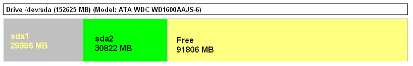
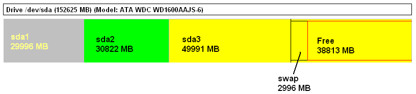

3.4 Installing CentOS
A pal of mine at work burnt me the CentOS 5.2 DVD that I am currently tinkering with. You can download a copy at: http://isoredirect.centos.org/centos/5/isos/i386/.
= = STEPS TO FOLLOW = =
Step1: Put the CentOS 5.2 Installation media in your CD/DVD-ROM drive and restart the computer. I am booting from a CentOS 5.2 DVD.Step2: Press <ENTER> at the boot prompt.
Step3: Though an optional one, this step is necessary if you wish to test your installation media prior to installation. Since it can take a long time, we skip the test here. Select "Skip", and press the 'Space Bar' key on your keyboard.
Step4: The welcome screen of CentOS appears. Click on 'Next' to continue. You can click on the 'Release Notes' button to check out the online links for further information. The release notes for CentOS 5.2 is available online at: http://wiki.centos.org/Manuals/ReleaseNotes/CentOS5.2
Step5: I choose English as the language for the installation process. Click on 'Next' to continue.
Step6: I choose U.S.English as the appropriate keyboard layout for the system. Click on 'Next' to continue.
Step7: This brings us to the most significant stage of the CentOS installation process, i.e. partitioning the hard disk drive. In the drop-down list, you can see the following options:Remove all partitions on selected drives and create default layout.
Remove linux partitions on selected drives and create default layout.
Use free space on selected drives and create default layout.
Create custom layout.
Choosing Remove all partitions on selected drives and create default layout would remove all existing primary and secondary partitions on the hard disk drive and thus, erase all data on these partitions as well. We select the final option, Create custom layout. Click on 'Next' to continue.
Step8: You shall see your hard disk drive geometry laid out on the screen. In my case, I have:

Here, sda1 @ size = 30GB is our Microsoft WinXP FAT-32 primary partition which we created in Chapter 2: Installing Microsoft Windows section.
sda2 @ size = 30GB is our OpenSolaris 2008.11 primary partition, or correctly in Solaris terminology, slice which we created in Chapter 3: Installing OpenSolaris section.
The Free @ size = 90GB is where we shall be creating a CentOS Linux ext3 filesystem partition.
Step9: Select Free partition, and click on the 'New' button, which brings up a "Add Partition" window. From the drop-down list, select File System Type: ext3, Mount Point: /, Size (MB): 50000, Additional Size Options: Fixed size, Select Force to be a primary partition. Click on 'OK'. This creates the 3rd primary partition of the hard disk, i.e. /dev/sda3 which will be formatted with the Linux ext3 partition hosting CentOS.
Step10: Select Free partition again, and click on the 'New' button, which brings up a "Add Partition" window. From the drop-down list, select File System Type: swap, Size (MB): 3000 (ideally swap should be 3 times your system's RAM), Additional Size Options: Fixed size. Click on 'OK'. DO NOT select "Force to be a primary partition' since Solaris/x86 and Linux swap partitions use the same filesystem ID: 0x82 and thus, BOTH CANNOT EXIST AS PRIMARY PARTITIONS on the same hard disk drive. Thus, if you wish to install Solaris on a hard disk drive which already has a Linux swap filesystem sitting on it, the Solaris filesystem shall install on the Linux swap partition. You can opt out of this ignominious situation by:a) not choosing to create/use a dedicated Linux swap partition if you have enough RAM on the system;
b) shifting the existing Linux swap partition on another hard disk drive to prevent clash between the titans;
c) you can choose to install Linux after Solaris has been installed and configured on the system. This is what I have opted for in this guide and in Step10 whilst creating the 3GB Linux swap partition did not choose the 'Force to be a primary partition' option. Thus, once created, the Linux swap partition is created as /dev/sda4 which is an EXTENDED partition consisting of: i) /dev/sda5 which is the Linux swap, ii) Free space which I shall be utilizing in the future. Probably shall install FreeBSD on it!
After step10, you ought to have a hard disk geometry breakup on your screen which resembles:

Here, sda1 @ size = 30GB is our Microsoft WinXP FAT-32 primary partition which we created in Chapter 2: Installing Microsoft Windows section.
sda2 @ size = 30GB is our OpenSolaris 2008.11 primary partition, or correctly in Solaris terminology, slice which we created in Chapter 3: Installing OpenSolaris section.
sda3 @ size = 50GB is our CentOS 5.2 ext3 primary partition.
swap @ size = 3GB is our Linux swap partition.
Step11: Click on 'Next' to continue.
Step12: We reach the GNU GRUB boot loader screen. Select 'The GRUB boot loader will be installed on /dev/sda'. In the default, tick on option: CentOS mounted on device /dev/sda3 and change 'Other' label to Windows by clicking on the Edit button. Leave rest of the options as it is and click on 'Next' to continue.
Step13: In the network settings screen, the default setting here is to configure the network interfaces with DHCP, but if you wish to setup server services on CentOS, static IP addresses would be a better option. Configure the Ethernet interface by using 'Enable IPv4 support', and then selecting option: 'Manual configuration'. Input the IP address/netmask, hostname, gateway, primary dns, secondary dns and click on 'Next' to continue.
Step14: Choose your time zone, and click on 'Next' to continue.
Step15: Enter a root password and confirm it by entering the same. Click on 'Next' to continue.
Step16: Now we select the software that we wish to run on CentOS. I select: Desktop - Gnome, Server, Server GUI. Select 'Customize now', and click on 'Next' to continue.
Step17: We select the package groups that we want to install. Since we may need to compile the Linux kernel for read/write support on Solaris/x86 partitions later on, definitely select Development Libraries, Development Tools; choose Administration Tools in Base System category. Click on 'Next' to continue.
Step18: The installer checks for dependencies of the selected packages.
Step19: A screen appears asking us to commit for the installation. Click on 'Next' to commence CentOS 5.2 installation.
When the system does come up, you shall see the GNU GRUB screen in blue with the following options:CentOS (2.6.18-92.e15)
Windows
Selecting CentOS (2.6.18-92.e15) and pressing <ENTER> logs you into CentOS wherein a few more system-wide configuration needs to be done. Selecting Windows boots your system into WinXP. But where is our dear old friend OpenSolaris 2008.11 which we installed in Chapter 3: Installing OpenSolaris section? Read the next Chapter on how to configure the GRUB boot loader so as to boot all three OSes: WinXP, OpenSolaris and CentOS from the GRUB menu.